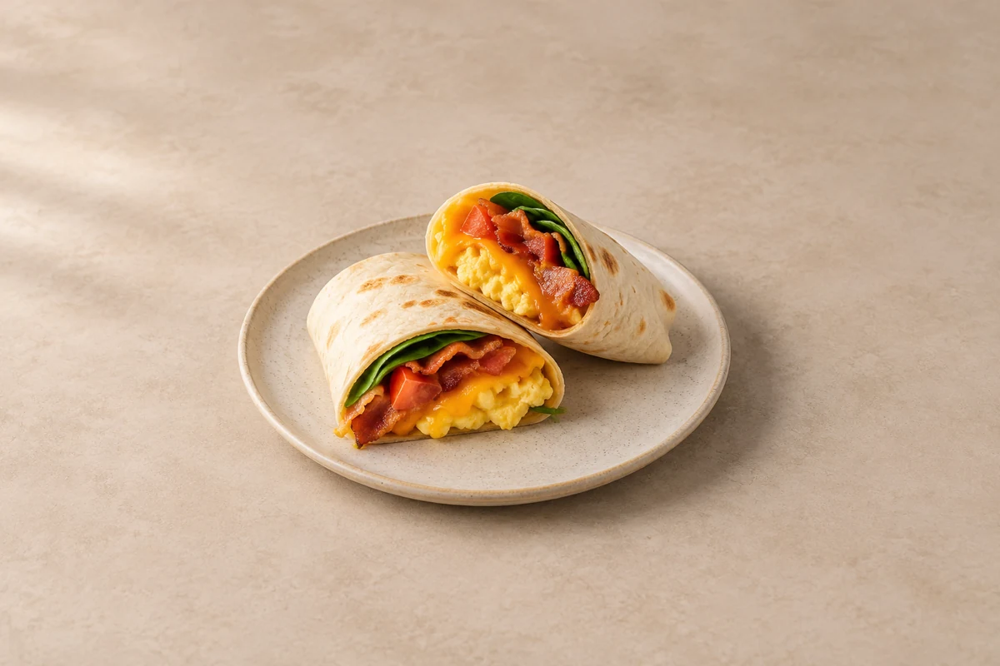

Breakfast & Brunch
Breakfast Wraps
Warm toasted wraps filled with scrambled eggs, bacon, cheddar, tomato and spinach. Serves 2.
Ingredient quantities update automatically

Ingredients
Method
Cook the bacon
Fry the bacon in a non-stick pan over a medium heat for 5–7 minutes, turning until cooked and crisp at the edges. Remove, chop and set aside. Pour away excess fat.Wilt the spinach
Add the spinach to the pan and stir for 1–2 minutes until wilted. Transfer to a plate and drain any liquid.Scramble the eggs
Beat the eggs with black pepper. Add the olive oil to the pan over a low heat. Pour in the eggs and stir gently for 2–3 minutes until just set.Fill the wraps
Warm the tortillas briefly so they bend easily. Divide the eggs, bacon, spinach, tomato and cheddar between them, keeping the filling in the centre.Fold and toast
Fold in the sides and roll tightly. Place seam-side down in a dry frying pan over a medium-low heat. Toast for 1–2 minutes on each side until golden and the cheese melts.Serve
Cut in half and serve straight away.
Tips & leftovers
Storage & leftovers
Cool the cooked filling promptly and refrigerate within 2 hours; eat within 48 hours. Keep tomato separate where possible to avoid soggy tortillas. Make only as many wraps as you intend to eat hot.
Freezing
Freeze cooled wraps without tomato, tightly wrapped individually, for up to 1 month for best texture. Defrost in the fridge; the scrambled egg may be firmer after freezing.
Reheating
Reheat once, loosely covered in an oven at 180°C / 160°C fan, until the egg and bacon filling is steaming hot in the centre. Uncover briefly to crisp the tortilla.
Substitutions
Use mushrooms instead of bacon for a meat-free version, frying off their moisture first. Swap cheddar for another melting cheese. Use small pieces of drained roasted pepper instead of tomato.
Keeping leftovers safe
Cool cooked leftovers in small portions and refrigerate within 2 hours. Keep the fridge at 0–5°C and the freezer around −18°C. Freeze suitable leftovers promptly. Defrost fully in the fridge and use within 24 hours. Reheat only once, until steaming hot all the way through. Follow any shorter use-by or opened-pack instructions; using older cooked ingredients does not restart their storage time.
Food-safety guidance: Food Standards Agency: chilling and freezing · reheating leftovers.